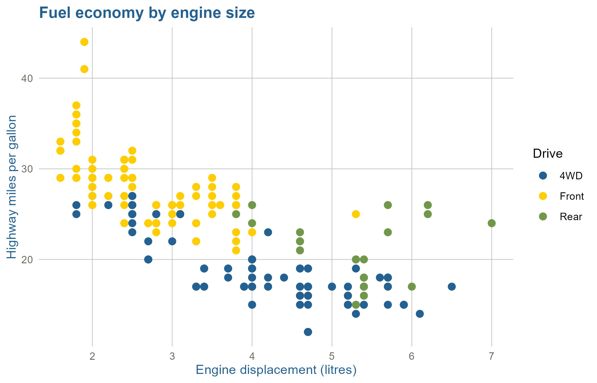
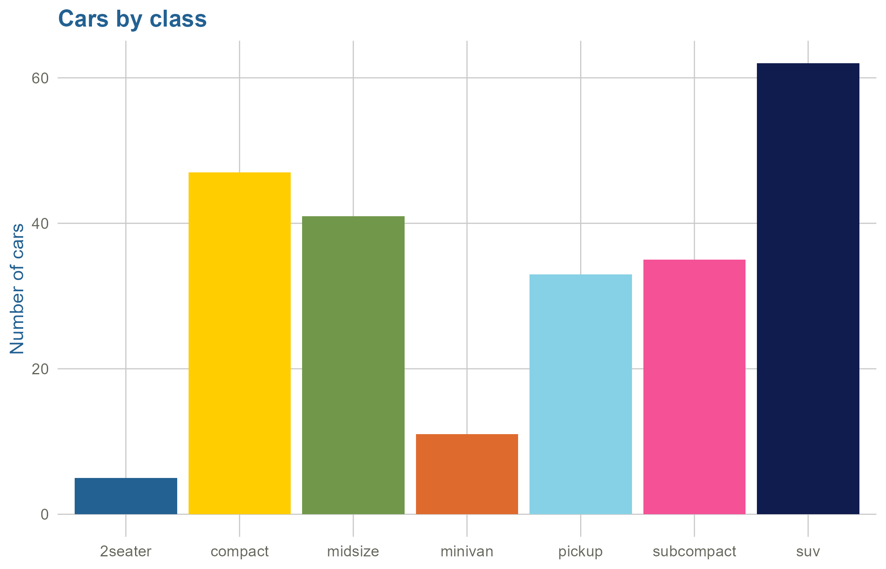
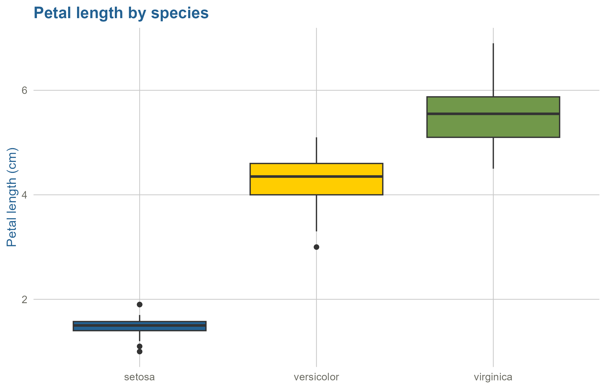
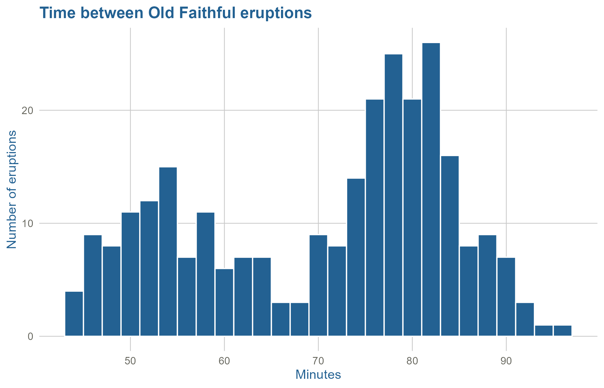
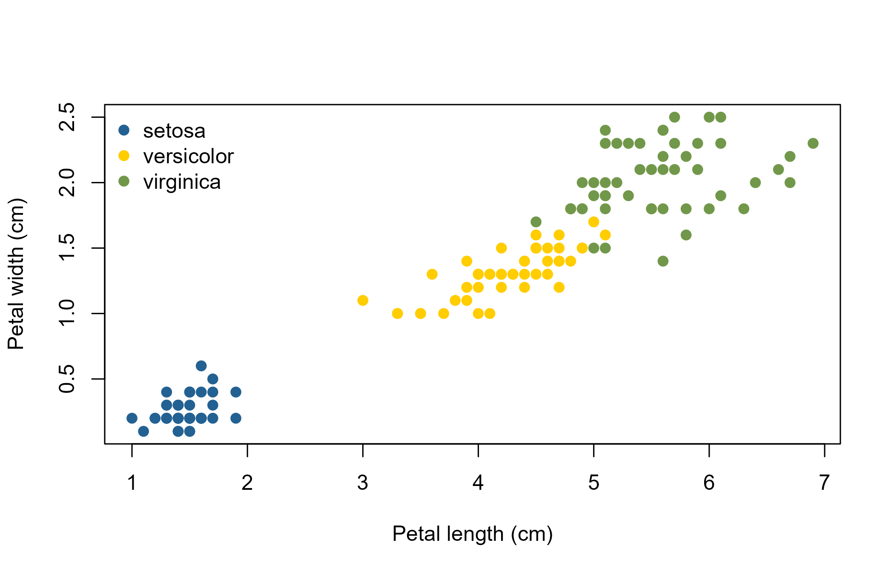

Get the CANHR colors in R and use them with ggplot2 and base R graphics.
Getting colors
canhrcolors() returns the full palette as hex codes.
Give it one or more color names to get just those colors.
canhrcolors()
#> [1] "#236192" "#FFCD00" "#71984A" "#DF6A2E" "#87D1E6" "#F45197" "#111C4E"
#> [8] "#774D28" "#66665D" "#F6DFA4" "#C4CFDA" "#C8C8C8" "#165B63" "#526B46"
#> [15] "#A43D52" "#F7F4EC" "#263238" "#D6AA51"
canhrcolors("blue")
#> [1] "#236192"
canhrcolors(c("deep teal", "warm berry"))
#> [1] "#165B63" "#A43D52"ggplot2
scale_color_canhr() and scale_fill_canhr()
color groups in palette order, and theme_canhr() styles the
titles, text and grid lines. The examples use data that come with R and
ggplot2.
Scatter plot
ggplot(mpg, aes(displ, hwy, color = drv)) +
geom_point(size = 2.5) +
scale_color_canhr(labels = c("4WD", "Front", "Rear")) +
theme_canhr() +
labs(
title = "Fuel economy by engine size",
x = "Engine displacement (litres)",
y = "Highway miles per gallon",
color = "Drive"
)
Highway mileage by engine size in the mpg data, colored by drive type.
Bar chart
ggplot(mpg, aes(class, fill = class)) +
geom_bar(show.legend = FALSE) +
scale_fill_canhr() +
theme_canhr() +
labs(title = "Cars by class", x = NULL, y = "Number of cars")
Number of cars in each class in the mpg data.
Box plot
ggplot(iris, aes(Species, Petal.Length, fill = Species)) +
geom_boxplot(show.legend = FALSE) +
scale_fill_canhr() +
theme_canhr() +
labs(title = "Petal length by species", x = NULL, y = "Petal length (cm)")
Petal length for the three species in the iris data.
One color
Use a single color by name.
ggplot(faithful, aes(waiting)) +
geom_histogram(binwidth = 2, fill = canhrcolors("blue"), color = "white") +
theme_canhr() +
labs(
title = "Time between Old Faithful eruptions",
x = "Minutes",
y = "Number of eruptions"
)
Minutes between Old Faithful eruptions in the faithful data.
A plot that needs more colors than the palette has gets a warning and draws the extra groups in grey.
Base R graphics
The colors work anywhere R accepts a color.
pal <- canhrcolors()[1:3]
plot(Petal.Width ~ Petal.Length, data = iris, col = pal[Species], pch = 19,
xlab = "Petal length (cm)", ylab = "Petal width (cm)")
legend("topleft", legend = levels(iris$Species), col = pal, pch = 19, bty = "n")
Petal width against petal length in the iris data, drawn with base R.
Color reference
| Color | Code | Hex |
|---|---|---|
| Blue | canhrcolors("blue") |
#236192 |
| Gold | canhrcolors("gold") |
#FFCD00 |
| Green | canhrcolors("green") |
#71984A |
| Orange | canhrcolors("orange") |
#DF6A2E |
| Cyan | canhrcolors("cyan") |
#87D1E6 |
| Magenta | canhrcolors("magenta") |
#F45197 |
| Dark Blue | canhrcolors("dark blue") |
#111C4E |
| Brown | canhrcolors("brown") |
#774D28 |
| Dark Grey | canhrcolors("dark grey") |
#66665D |
| Custard | canhrcolors("custard") |
#F6DFA4 |
| Light Blue | canhrcolors("light blue") |
#C4CFDA |
| Light Grey | canhrcolors("light grey") |
#C8C8C8 |
| Deep Teal | canhrcolors("deep teal") |
#165B63 |
| Tundra Green | canhrcolors("tundra green") |
#526B46 |
| Warm Berry | canhrcolors("warm berry") |
#A43D52 |
| Warm Ivory | canhrcolors("warm ivory") |
#F7F4EC |
| Charcoal | canhrcolors("charcoal") |
#263238 |
| Muted Gold | canhrcolors("muted gold") |
#D6AA51 |